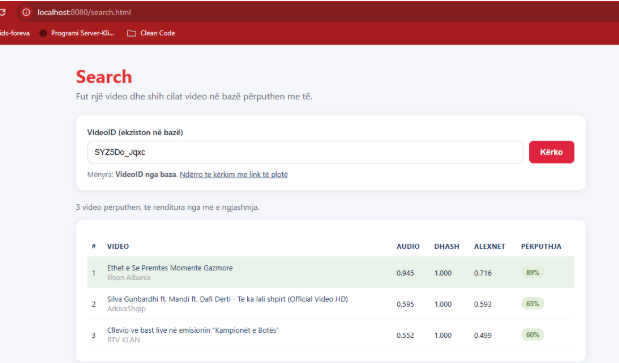

Copyright Content Detection

The Problem
This is an ongoing research project I'm building (2025-2026). The trigger was a specific gap I identified in how YouTube actually protects rights holders: YouTube's own Content ID system only compares uploaded audio and video against a reference database, it never looks at metadata like title or description, and, more importantly, it's only available to large rights-management companies like Sony or Universal. Independent creators with one or two channels have no equivalent tool, even though a reposted video can carry a completely different title and description while keeping the same underlying audio or visual content. That gap, no accessible way for small creators to detect unauthorized reposts of their own content, is what this project addresses.
My Role
Sole researcher and developer, owning research, architecture, and implementation end-to-end, which kept the design tightly aligned with the evaluation results as the system evolved.
Technical Decisions
Three-signal similarity score
I combined three independent layers of analysis, Chromaprint audio fingerprinting, perceptual hashing of video frames, and LLM-based semantic analysis of title/description text, into a single similarity score, rather than relying on audio/video matching alone the way Content ID does. A repost can survive re-editing, trimming, or a quality drop in the audio/video signal while keeping a semantically similar title, or vice versa; a single signal misses cases the other two would catch, so combining them was the direct answer to the specific weakness I'd identified in Content ID.
yt-dlp + FFmpeg + Chromaprint pipeline
I used yt-dlp to pull the audio/video streams and FFmpeg to both extract frames at regular intervals and convert audio to the uncompressed format Chromaprint's fpcalc needs, rather than trying to work from YouTube's metadata alone. There's no official download API for raw stream content, so this combination was the practical way to get analyzable audio and video data out of a YouTube URL; comparing fingerprints then reduces to a Hamming-distance threshold, a well-established, low-cost way to measure audio similarity even across compression differences.
LLM-based semantic matching over keyword matching
For the metadata layer, I used an LLM (via the Anthropic API) to score semantic similarity between two videos' titles and descriptions instead of doing keyword or exact-text matching. Since a repost's text is often deliberately reworded, literal matching would miss it; a model that judges meaning rather than word overlap was necessary to catch cases where the wording changed but the substance didn't, exactly the class of case Content ID's audio/video-only comparison can't see.
Formal evaluation: precision, recall, F1
I built formal evaluation into the project from the start, precision, recall, and F1-score against a labeled test set of known-infringing videos, rather than judging the system by spot-checking a few examples. Combining three signals into one decision threshold creates a real tradeoff between flagging too aggressively (false positives) and missing real infringements, and I needed a way to measure and tune that tradeoff rather than guess at it.
Project Information
- Category: Research System (LLM-assisted media analysis)
- Type: Independent Research Project
- Role: Solo developer
- Timeline: 2025 - 2026
Project Screenshots